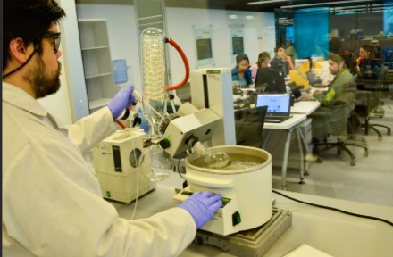
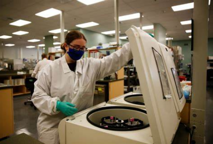
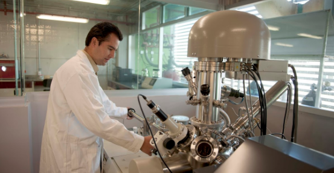

Mis datos personales en un offcanvas de boostrap 5:
1852825 Carlos Odel Sanchez Garza Grupo 209
Carrucel de imagenes con boostrap 5:



parrafo1: Tema - Ciencia
Objetivo de la ciencia
El objetivo de la ciencia es descubrir las leyes que rigen los fenómenos de la realidad, comprenderlos y explicarlos. De allí se deriva que la función de la ciencia es describir, explicar y predecir tales fenómenos a fin de mejorar la vida humana.
parraf2: Ciencia en el latin
La palabra ciencia deriva del latín scientĭa, que significa ‘conocimiento’ o ‘saber’ y, como tal, no se restringe a un área específica.
parrafo3:
Ciencia y tecnologia
La ciencia también está íntimamente relacionada con la tecnología, sobre todo desde la segunda mitad del siglo XIX. De allí la importancia de los estudios científicos destinados a crear o perfeccionar la tecnología.